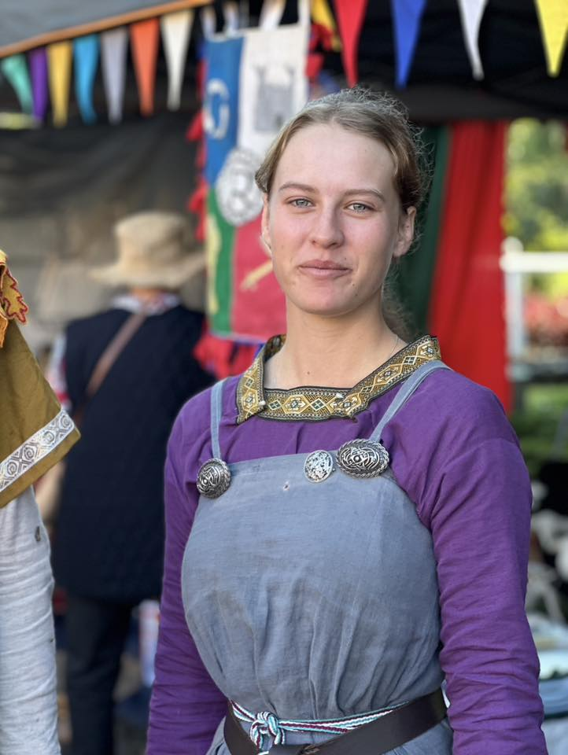

Estrid Huntersdottir
Tavern Keeper & Skilled Craftswoman

Basic Information
Full Name: Estrid Huntersdottir
Skills: Archery, Horse Handling, Tavern Keeping, Sewing, Mending
More information to come...
Detailed Narrative
Estrid Huntersdottir is a woman of many talents, combining practical skills with business acumen. As the daughter of a hunter, she has inherited a deep connection with the natural world, particularly in her expertise with bows and horses. These skills, combined with her role as a tavern keeper, make her a central figure in her community.
Her practical skills extend to the domestic arts as well, with particular expertise in sewing and mending. This combination of martial, equestrian, and domestic skills makes her a versatile and valuable member of the Riverbend Medieval Society.
More details about Estrid's story and background will be added soon...